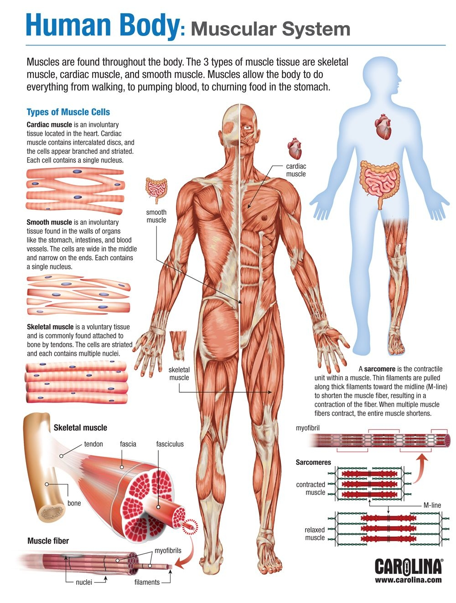
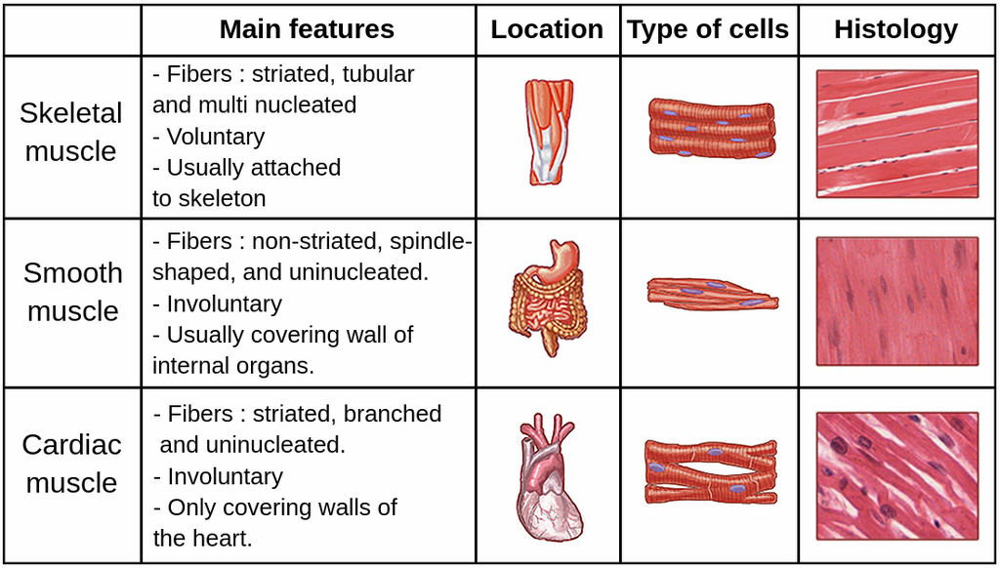
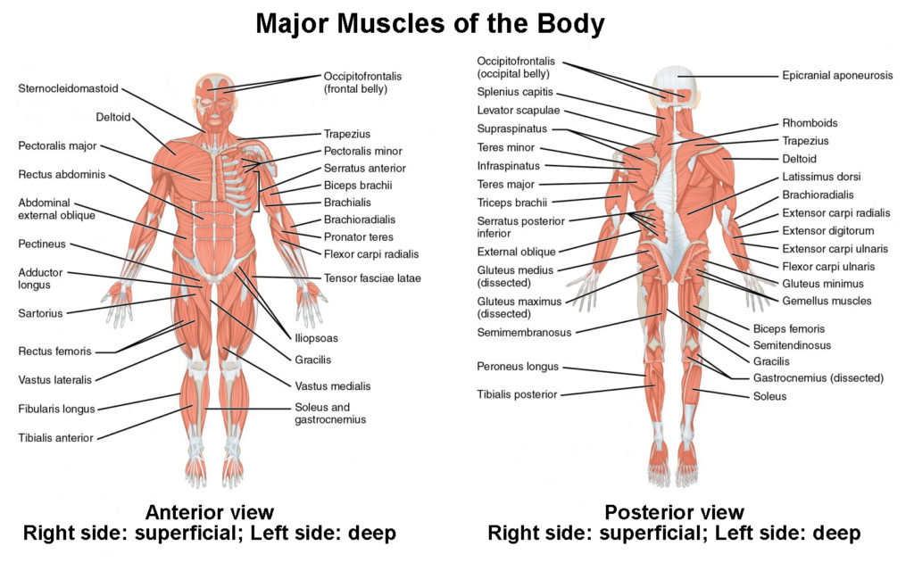
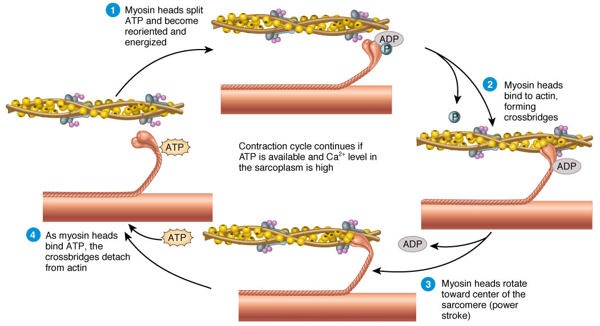
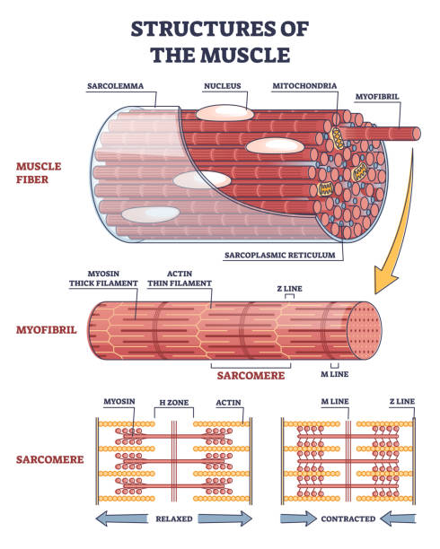
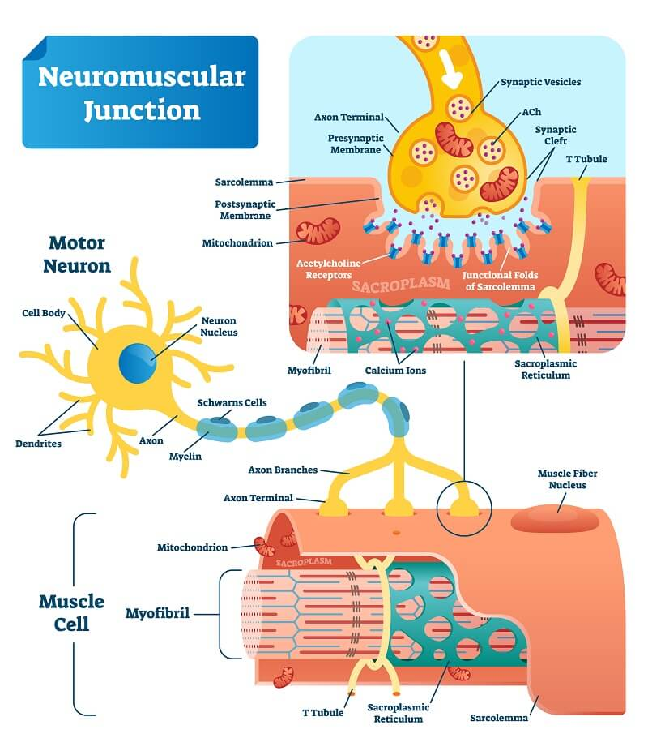
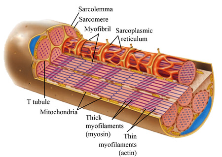

Muscular System
Overview
The muscular system is responsible for movement, posture, heat production, and support of body functions. Muscles work closely with the nervous system because muscle contraction begins with an electrical signal from a motor neuron. Muscles also work with the skeletal system because skeletal muscles attach to bones and pull on them to create movement.
There are three types of muscle tissue: skeletal muscle, smooth muscle, and cardiac muscle. Skeletal muscle is voluntary and moves the bones. Smooth muscle is involuntary and moves materials through internal organs. Cardiac muscle is found only in the heart and pumps blood through the body.

Key Vocabulary
| Term | Definition |
|---|---|
| Skeletal muscle | Voluntary muscle attached to bones that helps move the body. It is striated and controlled consciously. |
| Smooth muscle | Involuntary muscle found in hollow organs, blood vessels, and the digestive tract. It moves substances through organs. |
| Cardiac muscle | Involuntary striated muscle found only in the heart. It contracts rhythmically to pump blood. |
| Fascicle | A bundle of muscle fibers wrapped together inside a muscle. |
| Sarcolemma | The plasma membrane of a muscle fiber. It carries electrical signals along the muscle cell. |
| Myofibril | A long contractile structure inside a muscle fiber made of repeating sarcomeres. |
| Actin | The thin filament that myosin pulls on during muscle contraction. |
| Myosin | The thick filament with heads that attach to actin and create the power stroke. |
| Sarcomere | The smallest functional unit of skeletal muscle contraction. |
| Neuromuscular junction | The connection between a motor neuron and a skeletal muscle fiber. |
| Motor unit | One motor neuron and all the muscle fibers it controls. |
| Isotonic contraction | A contraction where the muscle changes length and movement occurs. |
| Isometric contraction | A contraction where the muscle produces tension but does not change length. |
| Twitch | A single brief contraction of a muscle fiber after one stimulus. |
| Tetanus | A sustained contraction caused by rapid repeated stimulation. |
| Muscle fatigue | A decrease in the muscle’s ability to contract due to low energy, ion imbalance, or buildup of waste products. |
Types of Muscle Tissue
Muscle tissue is classified into skeletal, smooth, and cardiac muscle. Each type has a different location, structure, control method, and function.
| Type | Location | Structural Characteristics | Control | Unique Features / Function |
|---|---|---|---|---|
| Skeletal | Attached to bones | Striated, long cylindrical fibers, multinucleated cells | Voluntary | Moves the skeleton, maintains posture, and produces heat |
| Smooth | Walls of organs and blood vessels | Non-striated, spindle-shaped cells, single nucleus | Involuntary | Moves substances through organs and controls vessel diameter |
| Cardiac | Heart | Striated, branching cells, intercalated discs, single central nucleus | Involuntary | Pumps blood and contracts in a coordinated rhythm |

Major Muscles and Actions
Major skeletal muscles are named by their location, shape, size, or action. Their main job is to move bones at joints. Each muscle has a primary action and clinical importance.
| Muscle | Primary Action | Clinical Note |
|---|---|---|
| Deltoid | Abducts the arm at the shoulder | Common site for intramuscular injections |
| Pectoralis major | Flexes, adducts, and medially rotates the arm | Tightness can contribute to poor posture |
| Biceps brachii | Flexes the elbow and supinates the forearm | Used in strength testing and reflex assessment |
| Triceps brachii | Extends the elbow | Important for pushing movements |
| Rectus abdominis | Flexes the trunk | Weakness can affect core stability |
| External oblique | Rotates and laterally flexes the trunk | Can be strained during twisting movements |
| Gluteus maximus | Extends the hip | Weakness can affect walking and standing from a chair |
| Quadriceps femoris | Extends the knee | Important for standing, walking, and climbing stairs |
| Hamstrings | Flex the knee and extend the hip | Commonly injured during running or sports |
| Gastrocnemius | Plantarflexes the foot and helps flex the knee | Calf strains are common in athletes |
| Soleus | Plantarflexes the foot | Important for posture and standing for long periods |
| Tibialis anterior | Dorsiflexes the foot | Weakness can cause foot drop |
| Latissimus dorsi | Extends, adducts, and medially rotates the arm | Important for pulling, climbing, and swimming movements |

Physiology of Contraction
Skeletal muscle contraction begins when a motor neuron sends an action potential to the neuromuscular junction. The signal is changed from an electrical signal in the neuron to a chemical signal, then back into an electrical signal in the muscle fiber.
1. Neuromuscular neurotransmitter release:
Action potential reaches the synaptic knob → voltage-gated calcium channels open → calcium enters the synaptic knob → synaptic vesicles release acetylcholine by exocytosis → acetylcholine crosses the synaptic cleft and binds receptors on the motor end plate.
2. Excitation-contraction coupling:
Acetylcholine causes depolarization of the muscle fiber. The action potential travels along the sarcolemma and down the T-tubules. This causes the sarcoplasmic reticulum to release calcium. Calcium binds to troponin, which moves tropomyosin away from the myosin-binding sites on actin. This allows actin and myosin to interact.
3. Sliding filament mechanism:
1. Cross-bridge formation – myosin heads attach to actin.
2. Power stroke – myosin pulls actin toward the center of the sarcomere.
3. Detachment – ATP binds to myosin and causes it to detach from actin.
4. Reset – ATP is broken down, and the myosin head returns to its ready position.
4. Relaxation:
Relaxation happens when acetylcholine is broken down and calcium is pumped back into the sarcoplasmic reticulum using ATP. When calcium leaves troponin, tropomyosin moves back over the binding sites on actin. Cross-bridge cycling stops, and the muscle relaxes.

Muscle Metabolism and Energy Sources
Muscles need ATP for contraction, relaxation, and ion transport. ATP is used by myosin heads during cross-bridge cycling, by calcium pumps during relaxation, and by sodium-potassium pumps to help restore membrane conditions.
Three main sources of ATP in muscle:
1. Creatine phosphate – provides very quick ATP for short bursts of activity.
2. Anaerobic glycolysis – breaks down glucose without oxygen and produces ATP quickly.
3. Aerobic respiration – uses oxygen to produce the most ATP and supports longer activity.
Anaerobic threshold: This is the point when the muscle cannot get enough oxygen to meet its energy needs. The muscle relies more on anaerobic glycolysis, and lactic acid can build up. This can contribute to burning, fatigue, and reduced performance.
Neuromuscular Junction and Control of Movement
The neuromuscular junction is the connection between a motor neuron and a skeletal muscle fiber. It includes the axon terminal, synaptic vesicles with acetylcholine, the synaptic cleft, and the motor end plate of the muscle fiber.
Role of acetylcholine: Acetylcholine is the neurotransmitter released by the motor neuron. It binds to receptors on the muscle fiber and opens channels that allow sodium to enter. This starts an action potential in the muscle fiber.
Motor unit: A motor unit includes one motor neuron and all of the muscle fibers it controls. Motor recruitment means activating more motor units to create a stronger contraction.
Smooth, graded contractions: Smooth contractions are produced by recruiting multiple motor units and by summation. The nervous system can increase the strength of contraction by increasing the number of active motor units or by increasing how often motor neurons fire.
Resting membrane potential and threshold: A typical skeletal muscle resting membrane potential is about -90 mV, and threshold is about -65 mV.

Common Disorders and Clinical Correlations
Muscular disorders can affect muscle fibers, nerve signaling, calcium control, or energy production. These conditions can cause weakness, fatigue, pain, spasms, or muscle breakdown.
| Disorder | Cause / Pathophysiology | Signs & Symptoms | Treatment & Nursing Implications |
|---|---|---|---|
| Muscular dystrophy | Genetic disorder that causes progressive muscle weakness, often related to abnormal or missing dystrophin. | Muscle weakness, difficulty walking, fatigue, loss of muscle function over time. | Supportive care, physical therapy, mobility support, respiratory monitoring, and safety precautions. |
| Myasthenia gravis | Autoimmune disorder where antibodies attack acetylcholine receptors at the neuromuscular junction. | Muscle weakness that worsens with activity, drooping eyelids, difficulty chewing, swallowing, or breathing. | Acetylcholinesterase inhibitors, immune therapy, rest periods, respiratory monitoring, and aspiration precautions. |
| Tetanus | Bacterial toxin affects nervous system control of muscles and causes severe muscle spasms. | Jaw stiffness, muscle spasms, rigidity, difficulty swallowing, and possible breathing problems. | Vaccination prevention, antitoxin, antibiotics, airway support, and reducing stimulation. |
| Strains, sprains, tears | Injury from overstretching or tearing muscle, tendon, or ligament tissue. | Pain, swelling, bruising, weakness, limited range of motion. | Rest, ice, compression, elevation, pain control, gradual return to movement, and injury prevention teaching. |
| Rhabdomyolysis | Severe muscle breakdown releases muscle proteins into the blood, which can damage the kidneys. | Muscle pain, weakness, dark urine, fatigue, possible kidney problems. | Emergency care, IV fluids, kidney monitoring, lab monitoring, and avoiding further muscle injury. |
Review Questions
Why is calcium so important in muscle contraction?
Calcium is important because it binds to troponin. This causes tropomyosin to move away from the myosin-binding sites on actin. Without calcium, myosin cannot bind to actin, and contraction cannot occur.
What is the difference between fast-twitch and slow-twitch muscle fibers?
Fast-twitch fibers contract quickly and produce strong force, but they fatigue faster. They are useful for short bursts of activity like sprinting. Slow-twitch fibers contract more slowly, resist fatigue, and are better for endurance activities like standing, walking, or long-distance running.
How would a deficiency in ATP affect muscle contraction and relaxation?
ATP is needed for myosin to detach from actin and for calcium to be pumped back into the sarcoplasmic reticulum. If ATP is low, cross-bridge cycling is affected and the muscle may not relax properly. This can cause stiffness, weakness, and muscle fatigue.
A patient has difficulty moving their arm after a stroke. What muscular system components are involved?
Voluntary movement depends on the motor areas of the brain, motor neurons, the neuromuscular junction, skeletal muscle fibers, actin and myosin, calcium release, and ATP. A stroke can disrupt the nervous system signal that normally activates the muscles, so the muscle may be structurally present but not properly controlled.
Diagrams
Sarcomere
A sarcomere should show Z-lines, A band, I band, H zone, M line, actin, and myosin.

Neuromuscular Junction
A neuromuscular junction should show the axon terminal, synaptic vesicles, acetylcholine, synaptic cleft, motor end plate, receptors, and skeletal muscle fiber.

Skeletal Muscle Fiber
A skeletal muscle fiber should show the sarcolemma, myofibrils, mitochondria, T-tubules, sarcoplasmic reticulum, nuclei, and sarcomeres.

Connections with Other Systems
Skeletal system: Muscles attach to bones by tendons and pull on bones to create movement at joints. Bones provide the structure and levers needed for muscular movement.
Nervous system: The nervous system controls skeletal muscle contraction through motor neurons. Signals from the brain and spinal cord travel to muscles and cause contraction through the neuromuscular junction.
Reflection
Understanding the muscular system is important because muscles are involved in movement, posture, breathing, circulation, digestion, and body temperature regulation. Learning how muscles contract also helps explain clinical conditions like muscle weakness, fatigue, spasms, and neuromuscular diseases.